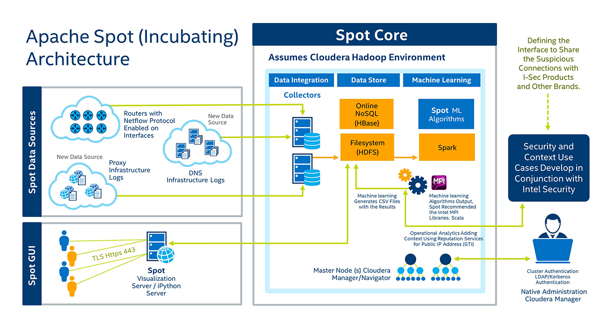

About four years ago, the era of the Big Data analytics began. Paired with advanced analytics, massive volumes of data can be culled to not only inform critical decisions, but also to simulate sophisticated “what if” scenarios that allow companies to gain competitive advantages by generating and predicting different scenarios. For example, a financial services company can more accurately determine what other products to offer a customer, and in what order, based on a wide variety of data, then use advanced analytics to gather insights. Creating a data lake that can be effectively used for predictive analytics raises tough questions — what data sources should we use? How should this data be collected and ingested? What are the best algorithms to analyze the data, and how should we present these results to our decision maker?
Apache Spot (Incubating) can help to solve most of these issues. Following is a description of the Apache Spot (Incubating), which is designed to facilitate Big Data analytics scenarios like the financial services company’s question about the right product to offer customers.
{kind=link}
Apache Spot (Incubating) Core Components
The Apache Spot (Incubating) Core is composed of three main components — data integration (collectors), data store (HDFS here, but can also be a non-SQL database) and machine learning.
In this diagram, the top left shows Apache Spot (Incubating) Data Sources, which include the collection of the information that will be used to create a data lake. The process is simple. Define a pull or push from the source of information then capture this information on Apache Spot (Incubating)’s “collectors.” The collectors are processes that interpret the information that is sent, then write it to the HDFS system in the Apache Spot (Incubating) cluster. The HDFS stores the data lake and ensures that resources can grow while remaining economical at every size. The Apache Spot (Incubating) algorithms are part of machine learning and are used to detect the uncommon information in the data lake.
Operational Analytics
As part of operational analytics, Apache Spot (Incubating) executes different batch processes that add information to machine learning results to provide meaning and context. Using the financial services product example, basic customer data could be augmented with information about other customers in the same region along with information about which products those customers recommended or complained about. Basically, the data scientists can “play” with the data using different algorithms to identify insights.
Visualizing Results
The Apache Spot (Incubating) GUI displays the results that the machine learning algorithms generate. Results are represented such that it is easy to identify both the most common things as well as find the most suspicious or uncommon information that is part of the data lake.
Customizable Open Source
Because Apache Spot (Incubating) is an open-source project, most of the components depicted here can be modified by the end user.